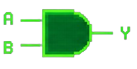
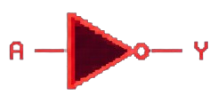
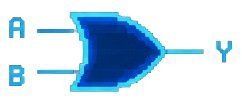
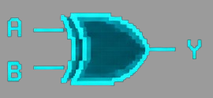
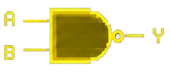
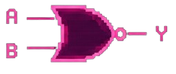

Sobre o Projeto
O Logic Gate é uma plataforma web educacional gamificada criada com o
objetivo de facilitar o aprendizado de lógica computacional para
estudantes iniciantes da área da computação. A proposta do projeto é
transformar conteúdos considerados complexos em uma experiência mais
interativa, intuitiva e divertida, utilizando desafios em formato de
fases e puzzles lógicos.
A plataforma simula circuitos digitais de maneira visual, permitindo que
os usuários interajam diretamente com portas lógicas e resolvam desafios
progressivos para avançar no sistema. Inspirado em jogos arcade e retrô,
o projeto busca unir aprendizado e entretenimento, incentivando a
prática da lógica de forma dinâmica e motivadora.
Além de auxiliar no desenvolvimento do raciocínio lógico, o projeto
também tem como foco proporcionar uma experiência moderna e interativa,
aproximando os estudantes da computação através de uma abordagem mais
prática e acessível.
Como funciona a logica das portas?
Porta AND

Porta NOT

Porta OR

Porta XOR

Porta NAND

Porta NOR
